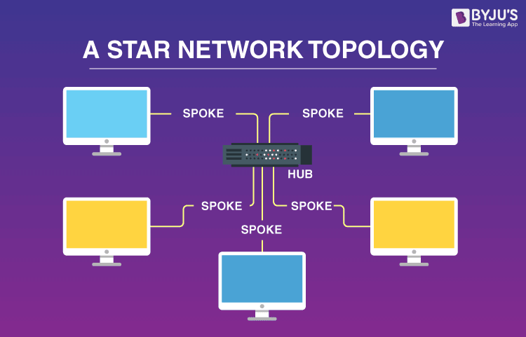
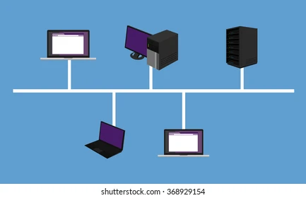
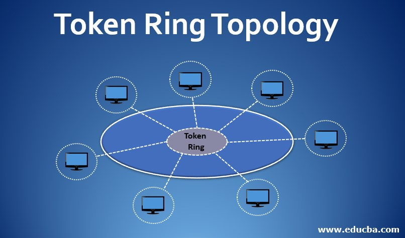

NETWORK TOPOLOGIES
What is network topolgy?
- The arrangement of a network that comprises nodes and connecting lines via sender and receiver is referred to as network topology.
- The various network topologies are:
Mesh Topology
- In a mesh topology, every device is connected to another device via a particular channel.
- In Mesh Topology, the protocols used are AHCP (Ad Hoc Configuration Protocols), DHCP (Dynamic Host Configuration Protocol), etc.
Star Toplogy
- In star topology, all the devices are connected to a single hub through a cable..
- This hub is the central node and all other nodes are connected to the central node.
- The hub can be passive in nature i.e., not an intelligent hub such as broadcasting devices, at the same time the hub can be intelligent known as an active hub.
- Active hubs have repeaters in them.
- Coaxial cables or RJ-45 cables are used to connect the computers. .

Bus Topology
- Bus topology is a network type in which every computer and network device is connected to a single cable.
- It is bi-directional.
- It is a multi-point connection and a non-robust topology because if the backbone fails the topology crashes. In Bus Topology, various MAC (Media Access Control) protocols are followed by LAN ethernet connections like TDMA, Pure Aloha, CDMA, Slotted Aloha, etc.

Ring Topology
- In this topology, it forms a ring connecting devices with exactly two neighboring devices.
- A number of repeaters are used for Ring topology with a large number of nodes, because if someone wants to send some data to the last node in the ring topology with 100 nodes, then the data will have to pass through 99 nodes to reach the 100th node.
- Hence to prevent data loss repeaters are used in the network.
